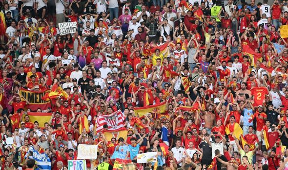

Husking Rovers FC
Victory is The Part of The Effort
Badalona is one of the oldest cities in Catalonia, founded by the Romans and today a vibrant hub of culture, industry, and sport. The city is known for its Mediterranean beaches, historical architecture, and strong sense of community.
The city’s streets come alive with festivals and traditions, blending ancient customs with modern energy. Badalona is not only geographically close to Barcelona but also emotionally tied through a shared love of football and culture.
For Husking Rovers, being rooted in Badalona means carrying forward the legacy of a city that has always been resilient, passionate, and proud. The club represents its people, their dreams, and their relentless pursuit of identity.